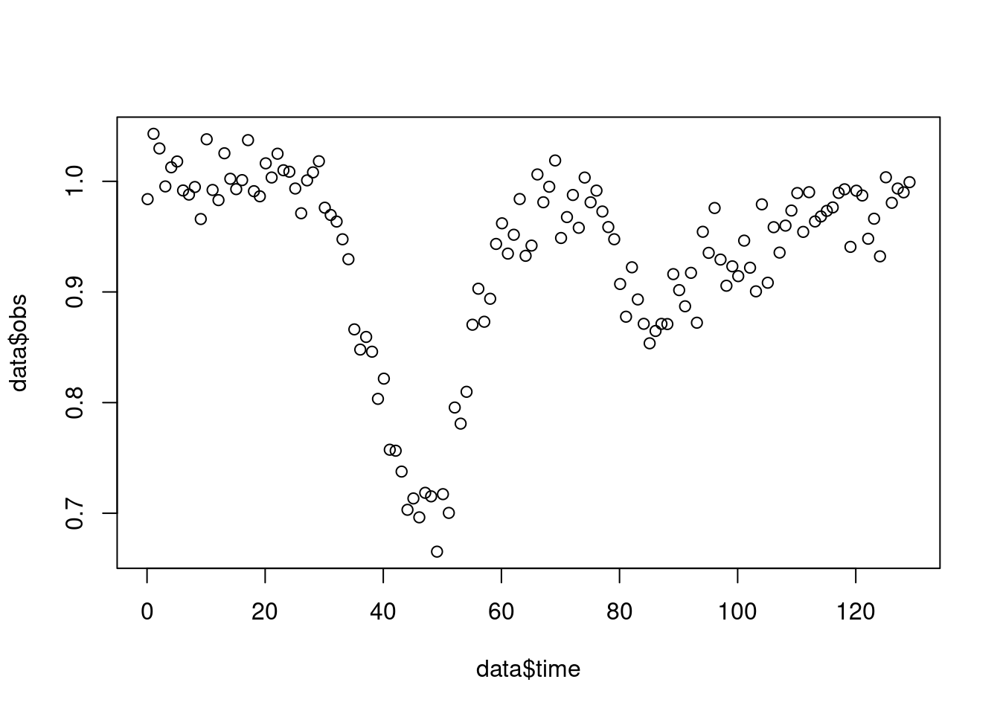
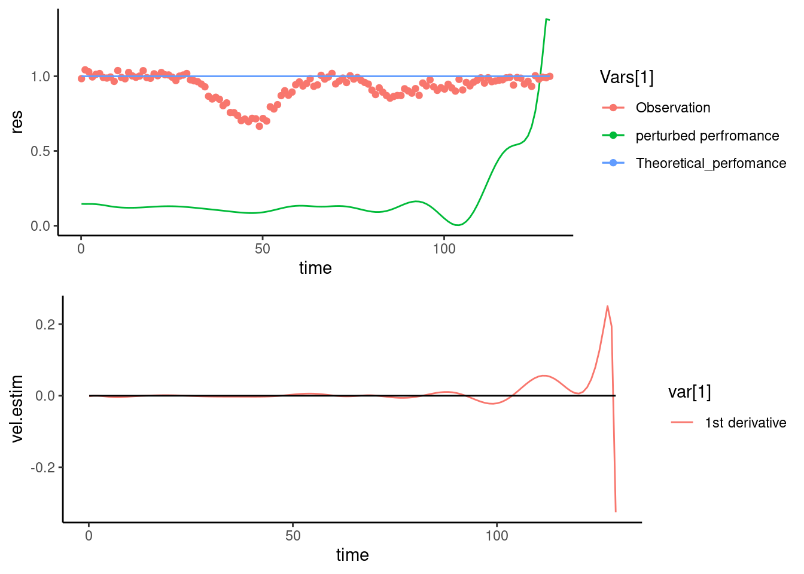

knitr::opts_chunk$set(message = FALSE)
load("DataPert.Rdata")
y=function(t){ #Ideal trajectory
yl=ymax-ymax*exp(0.1*(-t))
return(yl)
}
ymax=6 #plateau
tspan=seq(0,130,1)
plot(tspan,y(tspan), type="l")
points(tspan,data$obs)Case studies for post treatment of data
Case study 1.Dynamic semi-mechanistic model
The objective of this example is to evaluate the animal’s capacity of response when faced with the two perturbations.
We used the following ODE system to describe the influence of these two perturbations on the performance.
\[ \frac{d\alpha_j}{dt}=-k_{1j}\alpha_j \mathbb{1}_j(t)+k_{2j}(1-\alpha_j)(1-\mathbb{1}_j(t));\\ \alpha_j(t^b)=1; \\ \] Where \(k_{1j}\) and \(k_{2j}\) are model parameters and characterize the animal’s response to perturbation j in term of loss of the performance and recovery capacity, respectively. \(\mathbb{1}_i(t))\) the identity function which is one during the perturbation interval and 0, elsewhere. The value \(\alpha_b^j\) stands for the initial value of the function \(\alpha_j\). Therefore, function \(\alpha_j\) is one in non-perturbed conditions and less than one elsewhere. Then the trajectory of animal performance \(y(t)\) during n perturbations can be described as
\[ y(t)=\Sigma_{j=1}^n \alpha_j(t).f(P,t), \\ y(t_0)=y_0 \] Where f(P,t) describes the theoretical function of animal performance, P is the set of model parameters describing the characteristics of the theoretical trajectory, t is time interval of experiment.
#ODE funccion of perturbations
dalpha <- function(t, state, parameters) {
with(as.list(c(state, parameters)), {
tb1=10
te1=25
tb2=75
te2=85
# rate of change
da1=k11*(-a1)*(t<te1 &t>tb1)+ k21*(1-a1)*(t>te1&t<tb2)
da2=k12*(-a2)*(t<te2 &t>tb2)+ k22*(1-a2)*(t>te2)
# return the result
list(c(da1,da2))
})
}library(deSolve)
library(ggplot2)
state <- c(a1 = 1,a2=1) #init var
parameters <- c(k11 = .05, k12 = .1, k21=0.15,k22=0.05)
alpha= ode(y = state, times = tspan, func = dalpha, parms = parameters) #alpha1 et 2: 1st and 2nd pertubations
alpha=as.data.frame(alpha)
data.test=as.data.frame(cbind(alpha,y(tspan),data$obs,(alpha[2]+alpha[3])/2*y(tspan)))
colnames(data.test)=c("time","alpha1","alpha2","perf","obs","pert")
# alpha1 et 2: 1st and 2nd pertubations
# perf: animal ideal trajectory of performance
# pert: actual perturbed performance
head(data.test) time alpha1 alpha2 perf obs pert
1 0 1 1 0.0000000 -0.07053181 0.0000000
2 1 1 1 0.5709755 0.28091643 0.5709755
3 2 1 1 1.0876155 0.79499282 1.0876155
4 3 1 1 1.5550907 1.86957724 1.5550907
5 4 1 1 1.9780797 1.76087134 1.9780797
6 5 1 1 2.3608160 2.36518639 2.3608160col=c("Theoretical Performance","Estimated response","Observation")
ggplot(data = data.test, aes(x = tspan)) +
geom_line(aes( y = perf, color = col[1]))+
geom_line(aes( y = pert, color = col[2]))+
geom_point(aes( y = obs, color = col[3]))The fihure above shows a hypothetic example of animal response to two different perturbations. Two consecutive perturbations occurred at \(t_1^b=10\) and \(t_2^b=75\), and were over at \(t_1^s=25\) and \(t_2^s=85\) days of age. Parameters of animal’s response \((k_{1j},k_{2j})\) are \((0.05,0.15)\) for the first perturbation and \((0.1,0.05)\) for the second. One can easily realize that the animal had a better capacity to resist faced with the first perturbation, while the capacity of recovery was better in the second perturbation. Moreover, compared to the second perturbation (10 days), the animal took more time to start the recovery period in the first perturbation (15 days).
Case study 2. Differential smoothing model
This example shows the use of a purely data-driven approach for the post treatment of performance data under perturbations. We present a hypothetic example, in which the expected performance is equal to 1, and the deviations from this value could be considered as perturbations.
library("fda")
library("graphics")
load("data_FDA.Rdata")
write.table(data$obs, file="data_FDA", append = FALSE, sep = " ", dec = ".",
row.names = TRUE, col.names = TRUE)
plot(data$time,data$obs)
Data were smoothed using B-Spline bases of order 5 with the roughness penalty \(\lambda=10^4\) to estimate animal performance.
#FDA
tspan=seq(0,130,1)
order = 6
pen.what = 4
lambda = 10^4
range = c(data$time[1],data$time[length(data$time)])
knot.vec = seq(1, length(data$time),2)
break.vec = data$time[knot.vec]
# B-spline regression
basis.func = create.bspline.basis(rangeval = range, norder = order, breaks = break.vec)
param.func = fdPar(fdobj = basis.func, Lfdobj = pen.what,lambda = lambda)
smooth.res = smooth.basis(argvals = data$time,data$obs,param.func)
res.fda = smooth.res$fd
eval.days =data$time
res.estim = eval.fd(eval.days,res.fda) #
vel.estim = eval.fd(eval.days,res.fda,1) #
acc.estim = eval.fd(eval.days,res.fda,2) #
data$res = res.estim
data$deriv=vel.estim
data$acc=acc.estim
Vars=c("perturbed perfromance", "Observation","Theoretical_perfomance")
p1= ggplot(data = data, aes(x = time)) +
geom_line(aes( y = res, color = Vars[1]))+
geom_point(aes( y = obs, color = Vars[2]))+
geom_line(aes( y = perf, color = Vars[3]))
var=c("1st derivative")
p2= ggplot(data = data, aes(x = time)) +
geom_line(aes( y = vel.estim, color = var[1])) +
geom_line(aes( y = 0))
theme_set(theme_classic())
update_geom_defaults("line", list(size = 1.1))
gridExtra::grid.arrange(p1, p2)
The upper graph shows the estimated function (black curve) against observation (dots). The lower graph shows the derivative of the estimated function. Zeros of derivatives are associated with maximums and minimums of the function. The blue line on the upper graph shows the theoretical performance of the animal, which is assumed to be 1.